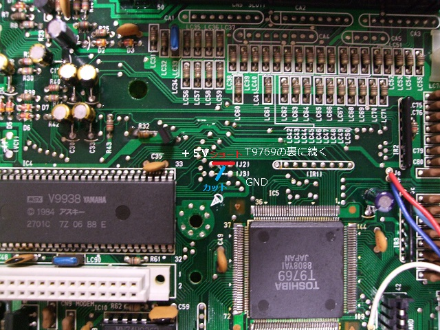

A1FMの秘密
通常、メインRAM64kBの機種では、メモリマッパ機能が無いのが普通です。しかしながら、A1FMには東芝製のT9769というLSIが搭載されており、そのLSIにはメモリマッパの機能があります。さらに、A1FMにはメモリを増設するためのパターンがあり、そこにRAMを載せることにより、簡単にメインRAMが128kBとなる・・・という噂がありました。メインRAMが128kBあればDOS2が動きますので、この恩恵は非常に大きいです。しかしながらRAMを載せるだけでは駄目だったという話は見つかりましたが、実際にできた話は見つかりませんでした。
A1Fは1987年11月頃、A1FMは1988年7月頃に発売されたもので、形状は似ています。A1Fにモデム機能を追加しただけなので、基板なども流用しているのかと思いきや、A1FはZ80(CPU)+YAMAHAのS1985(MSX-SYSTEM2)という構成ですが、A1FMはZ80を含む東芝のT9769(MSX-ENGINE2)を使用しています。S1985はマッパーアドレスを出力しており、周辺回路でDRAMのアドレスに変換しています。そのため、「周辺回路ができていれば」メモリ増設は比較的簡単にできます。T9769の場合はDRAMのアドレスを直接出力していますので、使うDRAMに合わせて設定が必要になるようです。
T9769を使った機種でのメモリ増設で参考になるのはMSXマガジン1989年9月号におけるA1WX(64kB→256kB)とWAVY70FD(64kB→128kB)の改造です。どちらも一箇所のジャンパを切って、一箇所をつなげています。A1FMはWAVY70FDの改造に近いはずですが、これだけではちょっと分かりません。もう一つ参考となるのはバックアップ活用テクニック17号のA1WX 512kB化です。この記事によるとT9769の51ピンと52ピンがそれぞれMPSEL0、MPSEL1という信号名で、DRAM容量の設定をしているようです。その記事からは下記のように読み取れます。
(52, 51) = (GND, GND) (32kB DRAMx2の64kB設定、出荷状態）
(52, 51) = (+5V, GND) (128kB DRAMx2の256kB設定、MSXマガジンの改造記事）
(52, 51) = (+5V, +5V) (128kB DRAMx4の512kB設定、バックアップ活用テクニックの記事）
WAVY70やA1FMが簡単に128kB化できるということであれば、下記の設定になっていると推測できます。
(52, 51) = (GND, +5V) (32kB DRAMx4の128kB設定）
ということで、51ピンにつながっている怪しげな所を探していきます。テスターでチェックしてみると51ピンも52ピンもGNDにつながっていますが、一見、51ピン及び52ピンには配線がでていないように見えます。T9769の下の方で配線されているようです。といっても表面からは配線が出てきている様子が無いので、裏面を見ると一箇所だけ表面とつながっている部分があります。そこを追ってみると・・・T9769の近くの(J2)の右側につながっていることが分かります。'(J2)の左側は5Vにつながっていますが、(J2)の右と左はつながっていません。(J3)の右側がGNDにつながっており、左側にそのままつながり、斜めに(J2)の右側に伸びてつながっていました。試しに(J2)から(J3)につながる部分をカットしてみると、(J2)の右側は（当然のことながら）GNDから分離され、T9769の51ピンにのみつながっていることが分かりました。
つまり、(J2)をつなげ、(J3)をカットすれば良さそうです。今回は(J3)がシルク印刷に隠れてよく見えなかったため、(J3)から(J2)に延びている線をカットしましたが、結果は同じです。

あとはIC17、IC18にメモリを載せれば完成です。C71、C72にパスコンを載せるのも忘れないようにしましょう。
64kB以下の機種でメモリマッパ機能の有無を調べるには、BASICで「OUT 255,1」と入力すればわかります。メモリマッパ機能がある場合、マシンが暴走します。何も起きなければメモリマッパ機能はありません。
S1985とT9769のメモリマッパの差について教えてくださったにがさんに感謝します。
お約束ですが、この噂を見て改造などを行い故障やその他問題が発生してもにがさんや私、れふてぃは責任は負えません。各自の責任において情報を広く集めて行うことをおすすめします。